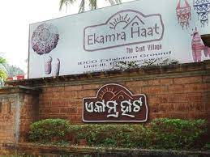

Ekamra Haat is situated in the heart of Bhubaneswar. It is a popular place for purchasing handicraft and handlooms products.Due to its well maintained environment and comfortable location,it has attracted large number of tourists and local people recently.It has 42 handlooms and handicraft shops and 8 open display corners which provide consumers with natural and original artisan products.
